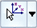

Constraints command bar
The options displayed on the Constraints command bar vary with the type of constraint you selected.
- Available Actions
-
Shows the selected constraint type. The default options for that constraint type are displayed on the command bar.
- Selection Type
-
Specifies which model geometry elements you want to select to apply the constraint to.
-
Face
Specifies that faces and surfaces are selectable.
Face sets may also be selected using PathFinder.
-
Edge/Corner
Specifies that model edges are selectable.
-
Point/Vertex
Specifies that points and vertices are selectable.
-
Feature
Specifies that features are selectable using PathFinder.
-
Node
Specifies that beam element nodes are selectable. (Available for beam mesh types.)
-
Curve
Specifies that beam curves are selectable. (Available for beam mesh types.)
Example:To allow a surface to rotate, apply a pinned constraint to a linear edge on the surface, but not to a point on the surface itself.
-
- Include Rotational DOF
-
Do not allow rotation degrees of freedom around the two axes that result in rotations out of the surface.
- Constrain Radial Growth
-
Do not allow translational movement along the radial direction.
- Constrain Rotation Around Axis
-
Do not allow rotational movement around the axis.
- Constrain Sliding Along Axis
-
Do not allow translational movement along the axial direction
 Symbol Color
Symbol Color-
Displays the Symbol Color dialog box so you can change the default constraint color displayed in the graphics window.
Click a color box to select a predefined color, or click New to define a custom color.
The color is applied to existing symbols and to new constraints.
 Symbol Size/Spacing
Symbol Size/Spacing-
Displays the Graphic Symbol Size dialog box so you can change the default constraint symbol size and spacing displayed in the graphics window.
- Symbol Size slider
-
Changes the symbol size for the current constraint. Symbol size is proportional. The default value is 50.
- Symbol Spacing slider
-
Changes the constraint symbol spacing pattern. A lower value produces a denser symbol display. Conversely, a higher value produces a sparser symbol display.
 Show Label
Show Label-
Specifies that a degrees-of-freedom (DOF) label is displayed with the constraint symbol.
Degree-of-freedom labels are based on the coordinate system: rectangular or cylindrical. To understand the labels, see the Help topic, Constraint labels.

Select coordinate system-
For a user-defined constraint, specifies a coordinate system to use to define the degrees of freedom. The default is the base coordinate system, but any rectangular coordinate system that exists in the document can be selected.

-
Accepts the current input and finishes defining the constraint.
Note:You also can right-click or press the Enter key.
-
Clears the current input.
How do I
Define a constraintActivity: Apply a fixed constraint
Activity: Apply pinned and no rotation constraints
Activity: Apply a sliding along surface constraint
Activity: Apply a user defined constraint
Edit a constraint
Learn more
Creating and using constraintsConstraints
Constraint symbols
Constraint labels